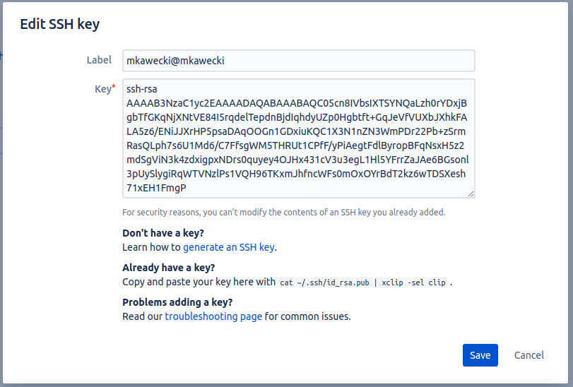
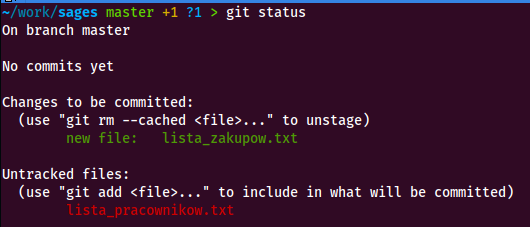
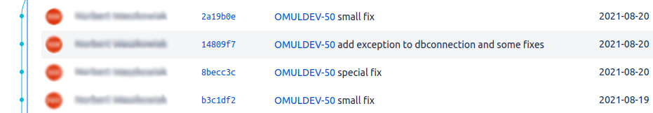

Git
Czyli jak nie narobić gnoju w repozytorium
Rozproszony system kontroli wersji
- śledzenie wszystkich zmian dokonywanych w plikach
- możliwość przywrócenia poprzedniej wersji pliku
- współdzielenie plików z innymi
- łączenie zmian dokonywanych w plikach przez wiele osób w różnym czasie
- obsługa dużych projektów
Podstawy
Git przechowuje dane jako zestaw migawek (snapshot).

Za każdym razem gdy wprowadzamy zmianę do projektu, Git tworzy obraz przedstawiający to jak wyglądają pliki w danym momencie.
Niemal każda operacja jest lokalna
Większość operacji jakie przeprowadzamy wymaga jedynie dostępu do lokalnych plików i zasobów.
Git wyłącznie dodaje nowe dane
Wykonując pracę niemal zawsze jedynie dodajemy dane do bazy danych Git.
Pozwala to na eksperymentowanie bez ryzyka - zawsze możemy wrócić do poprzedniej wersji projektu.
Stany

- zmodyfikowany
- śledzony
- zatwierdzony
Instalacja
Standardowy sposób instalacji w systemie Linux opartym na Debianie (np. Ubuntu).
$ sudo apt-get install gitKonfiguracja
Konfiguracja przetrzymywana jest w trzech miejscach:
-
/etc/gitconfig
-
~/.gitconfig
-
.git/config (w repozytorium)
Ustawienia tożsamości
$ git config --global user.name "John Doe"
$ git config --global user.email johndoe@example.com
Aliasy
Nie ma potrzeby pamiętania długich, skomplikowanych komend. Można skorzystać z aliasów:
$ git config --global alias.co checkout
$ git config --global alias.br branch
$ git config --global alias.ci commit
$ git config --global alias.st status
Podgląd ustawień
$ git config --list
alias.co=checkout
alias.br=branch
alias.ci=commit
alias.st=status
alias.unstage=reset HEAD --
alias.last=log -1 HEAD
user.email=m.kawecki@sages.com.pl
user.name=Michał Kawecki
Uwierzytelnianie
Warto wymienić się kluczem ssh z serwisem hostingowym, na którym znajdują się repozytoria.
git init
Tworzymy nowe repozytorium gita
git clone
Klonujemy istniejące repozytorium
git add
Dodajemy pliki do "poczekalni"
git commit
Zatwierdzamy zmiany (tworzymy commita)
$ git commit -m "<treść commita>"git status
Sprawdzamy status repozytorium
git log
Sprawdzamy historię zmian
~/work/sages master > git log
commit 3f2330dcbe4219835ab81b35f93a86710205b520 (HEAD -> master)
Author: Michał Kawecki <m.kawecki@sages.com.pl>
Date: Wed Jun 22 15:29:06 2022 +0200
Initial commit
git diff
Porównujemy zmiany
~/work/sages master !1 > git diff
diff --git a/hasla.txt b/hasla.txt
index 77a7723..d00821a 100644
--- a/hasla.txt
+++ b/hasla.txt
@@ -1 +1 @@
-mkaminski;m4ttek123
+mstone;m4ttek123
git revert
Wycofujemy zmiany
~/work/sages master > git revert 47f8cfc6f7592320365bcc55d0a5b50f2a844773
[master 20a9cda] Revert "Random commit"
1 file changed, 1 deletion(-)
delete mode 100644 hasla.txt
git reset
Resetujemy zmiany
~/work/sages master > git reset 47f8cfc6f7592320365bcc55d0a5b50f2a844773
Unstaged changes after reset:
D hasla.txt
git restore
Przywracanie zmian
~/work/sages master !1 > git status
On branch master
Changes not staged for commit:
(use "git add ..." to update what will be committed)
(use "git restore ..." to discard changes in working directory)
modified: lista_pracownikow.txt
no changes added to commit (use "git add" and/or "git commit -a")
~/work/sages master !1 > git restore lista_pracownikow.txt
~/work/sages master > git status
On branch master
nothing to commit, working tree clean
git commit --amend
Modyfikujemy commita
$ git commit --amend
git rebase
Przemieszczamy commity
$ git rebase <nazwa brancha>
git branch
Zarządzamy branchami
$ git branch
git checkout
Przełączamy się między branchami
$ git checkout <nazwa brancha>
git merge
Scalamy branche
$ git merge <nazwa brancha>
git remote
Zarządzamy repozytoriami zdalnymi
$ git remote
git pull
Pobieramy zmiany z repozytorium zdalnego
$ git pull
git push
Przesyłamy zmiany do repozytorium zdalnego
$ git push
Tagi
Specjalne oznaczenie poszczególnych punktów w historii repozytorium, które są szczególnie ważne.
Zazwyczaj wykorzystywane do oznaczania wydawanych wersji. Rozróżniamy dwa typy tagów:
- lightweight
- annotated
$ git tag -a v1.4 -m "my version 1.4"
HEAD
Wskazanie na miejsce w repozytorium (branch/commit) na którym się "znajdujemy"
~/work/sages master *1 > cat .git/HEAD
ref: refs/heads/master
Merge vs. rebase

Commitowanie
Rozsądny podział.
Commitujemy często.
Nie commitujemy "w połowie".
Używamy gałęzi.
Nazwy commitów są ważne.
Rozwiązywanie konfliktów